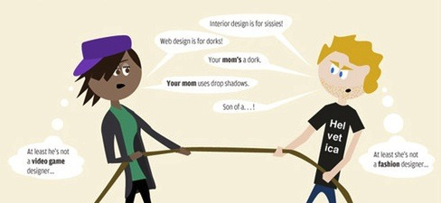

Wed, 08 Dec 2010 23:03:00 · infographic · design · designer
Infographic: Which Design Job is the Best?

Apparently, when it comes to design jobs, you can either be well-paid, well-employed, or love your job – but can’t have all three.
Here’s an infographic comparing the different types of design professions.